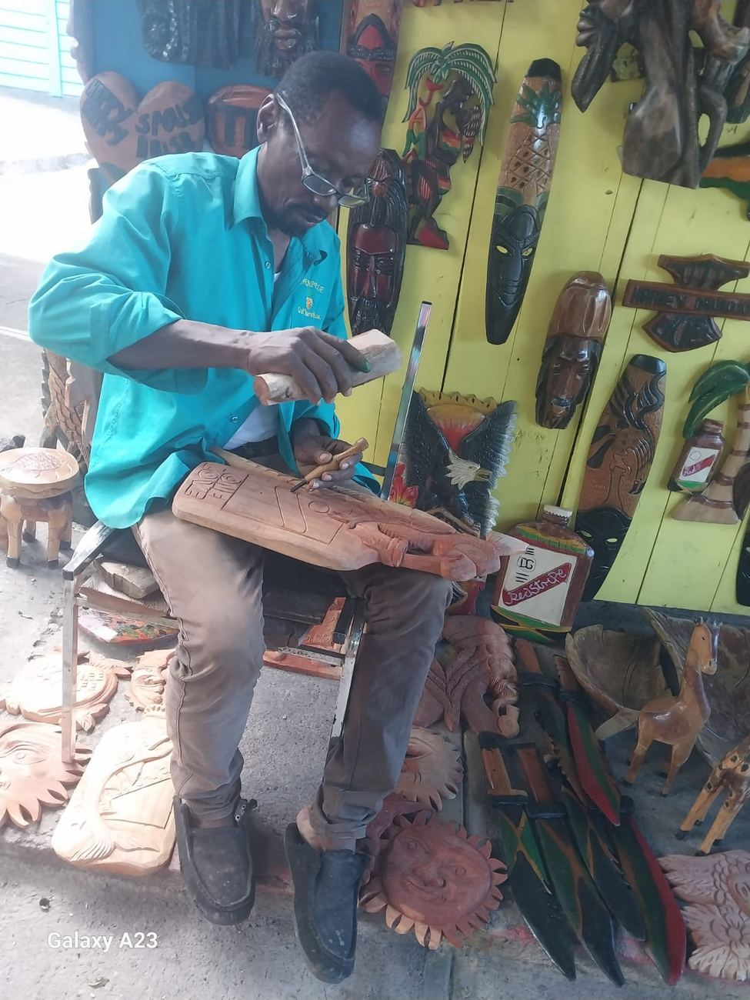
SHOP ##The carver
Masks, plaques, bowls and signs, cut by hand from lignum vitae and blue mahoe. Most days you will find him working at the front of the shop.
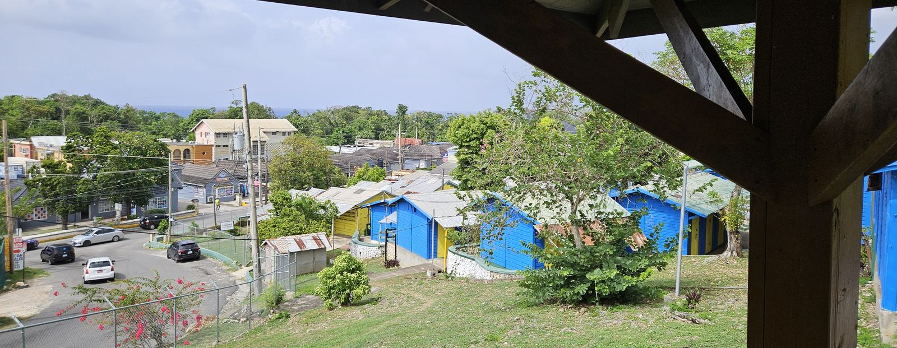
Main Street, Ocho Rios · est. 1978
Carvers, weavers, painters and jewellers who have worked this market for almost fifty years. Walk up from your hotel and buy it from the hands that made it.
The person who carved it, wove it or painted it is usually the one selling it to you.
On Main Street, minutes from Sandals Ochi, Jamaica Inn, Shaw Park and Hermosa. No taxi needed.
Cash, card, Apple Pay, Zelle, PayPal or CashApp. Leave the cash worry at the hotel.
Our story
1978
Pineapple Craft Market started as a handful of stalls on Main Street. Almost fifty years on it is more than 130 shops, and many are run by the second and third generation of the same family.
The shops are painted blue and yellow, set on the hillside overlooking the azure Caribbean Sea. Located in Ocho Rios, it's a short walk from the hotels but secluded from the hustle and bustle of downtown traffic. You can take your time here, and the person selling you a carving is usually the person who carved it.
In 2025 the Sandals Foundation backed upgrades to the market's walkways and shade, along with a training programme for our vendors. What has not changed is who is behind the counter.
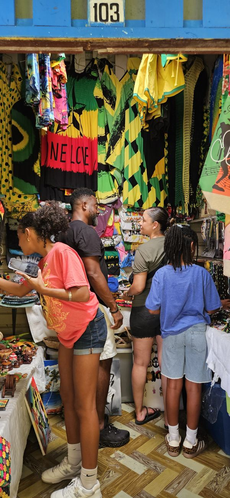
The makers

SHOP ##Masks, plaques, bowls and signs, cut by hand from lignum vitae and blue mahoe. Most days you will find him working at the front of the shop.
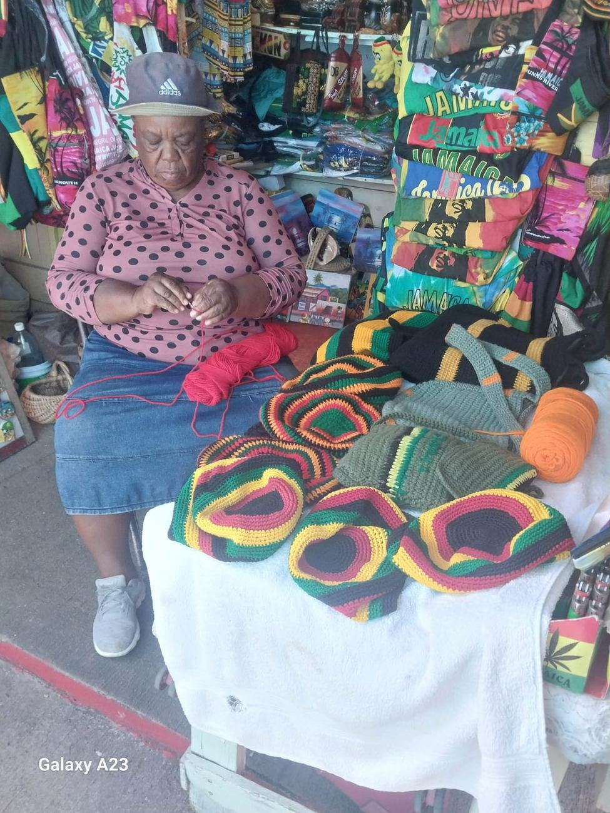
SHOP ##Hats, tams and shoulder bags worked stitch by stitch between customers. Nothing on the table is the same twice.
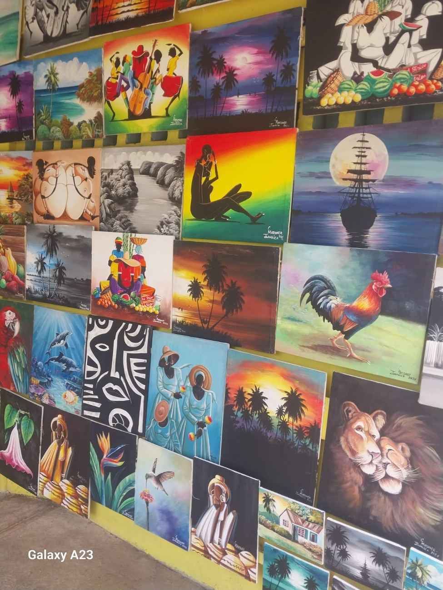
SHOP ##Original canvases, signed and dated. Sunsets, market scenes and portraits, painted here and hung on the shop wall to dry.
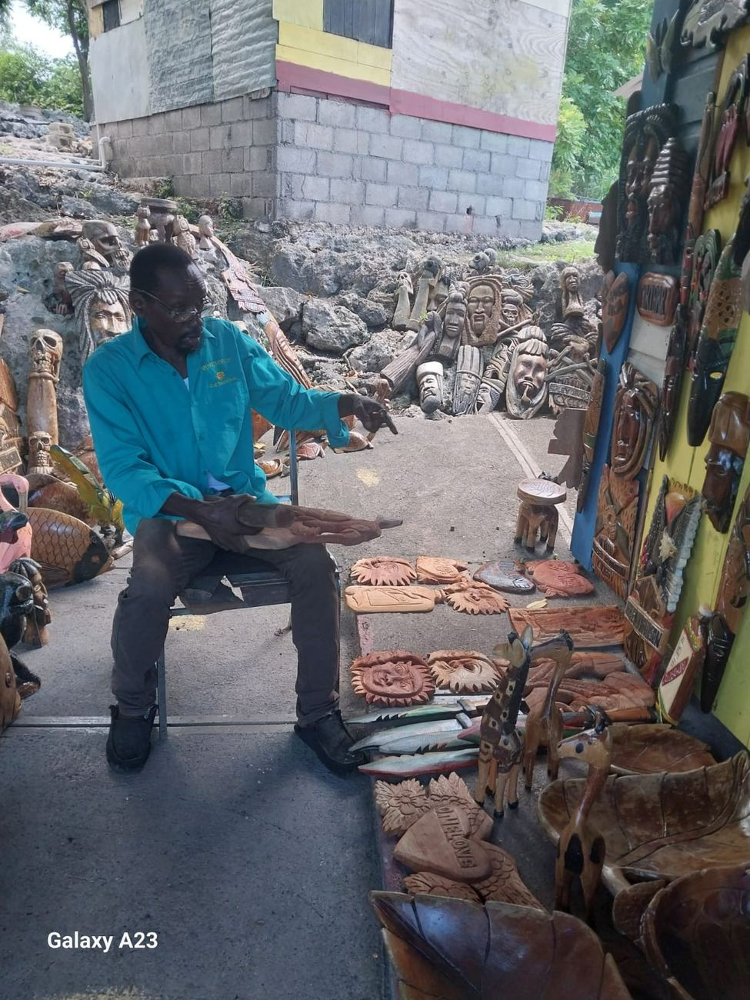
SHOP ##Behind the shopfronts, work in progress lies out to season and dry. Ask and you will get the whole story of a piece before you buy it.
What you'll find
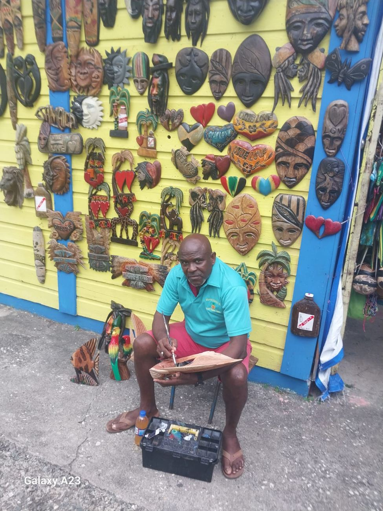
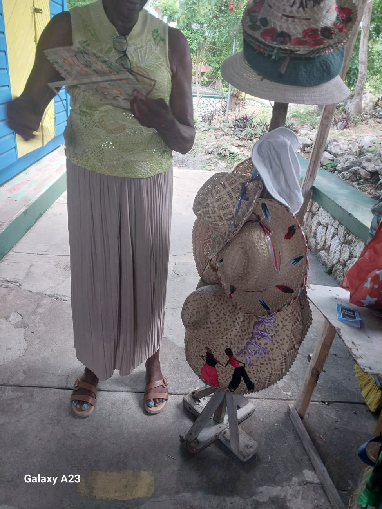
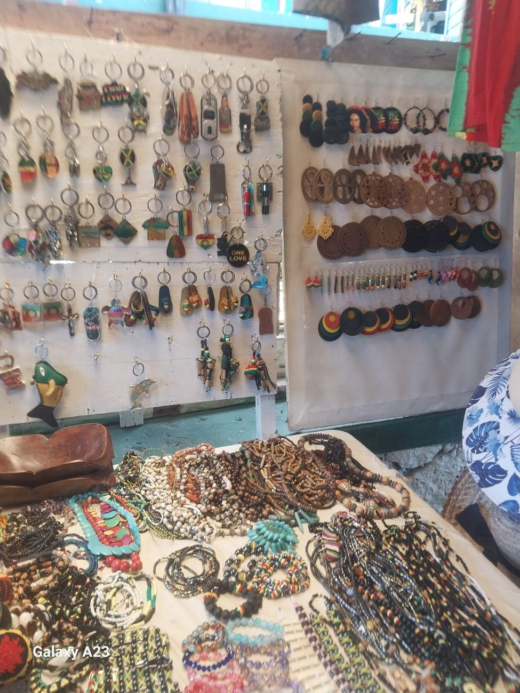
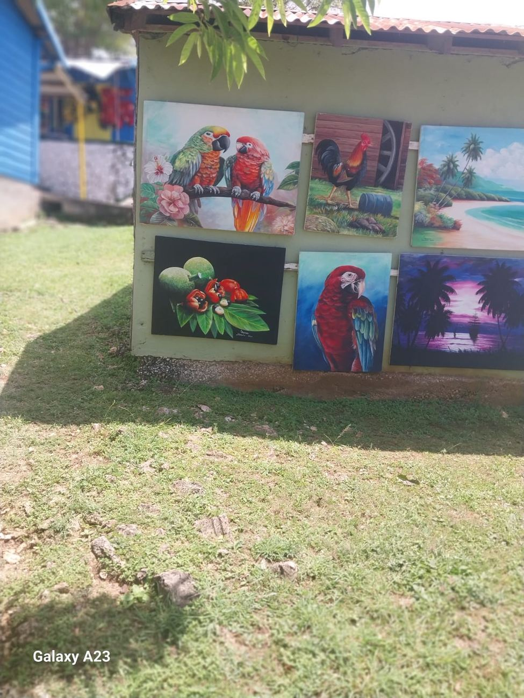
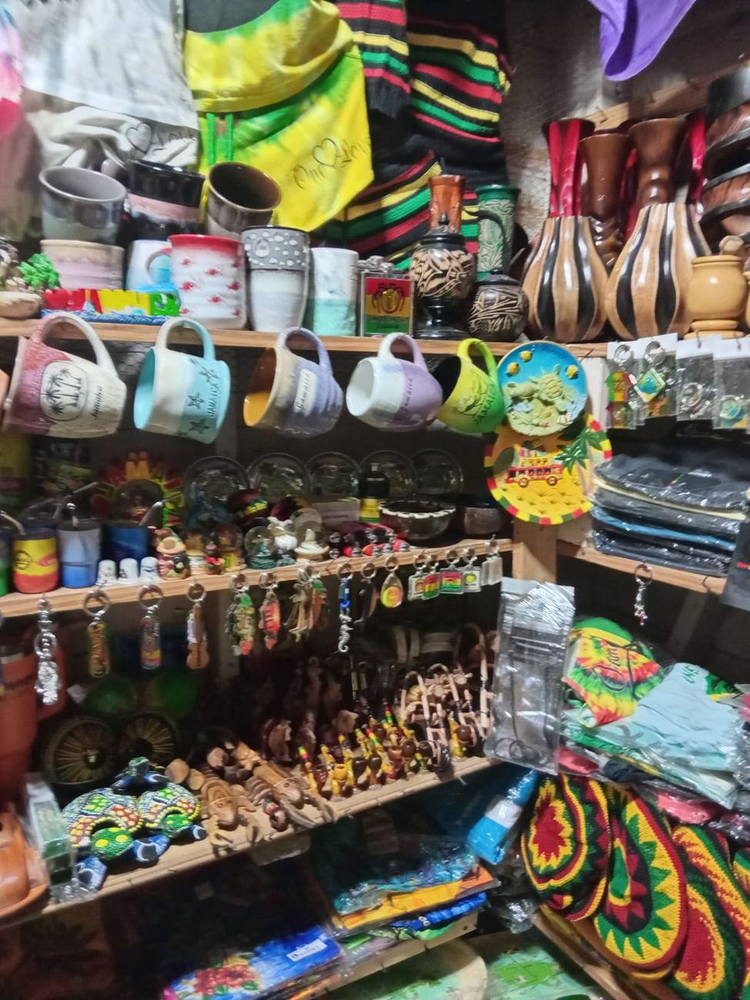
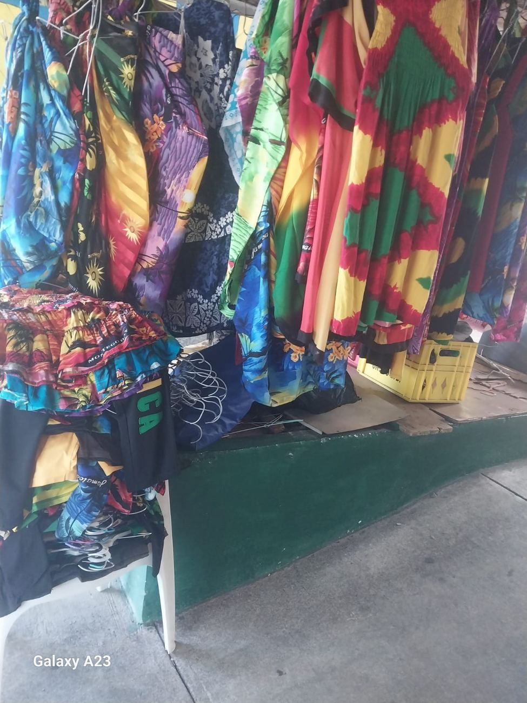
Culture day
Drumming, dancing and food at the market on culture day. Come for the craft, stay because something is always happening.
Plan your visit
Prices here are a conversation, not a trick. Ask what a piece costs, make a friendly offer, meet in the middle. If a price is fair, say so and take it. We are flexible but never forceful. Everyting irie
For tour operators
Groups get upgraded walkways and shade, vendors trained in customer service through the 2025 Sandals Foundation programme, and carving demonstrations we can arrange in advance.
Ask about coach access, group rates and demonstration bookings.